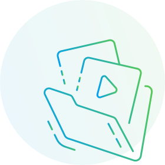

{% set logged = "yes" %} {% extends "master/master.html" %} {% block content %}

<div class="page page-library">
  <div class="container">
    <div class="library-empty">
      <div class="library-empty__img">
        
      </div>
      <div class="library-empty__content">
        <h2 class="library-empty__title">Избранное</h2>
        <p class="library-empty__description">
          Здесь будут храниться крийи, медитации и статьи, которые вы добавили
          из библиотеки.
        </p>
        <a href="pages/library.html" class="button button--s1 button--t1"
          >В библиотеку</a
        >
      </div>
    </div>
  </div>
</div>

{% endblock %}
